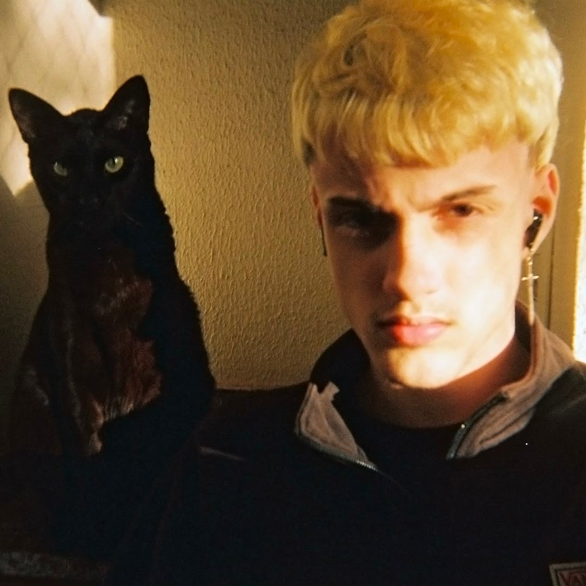
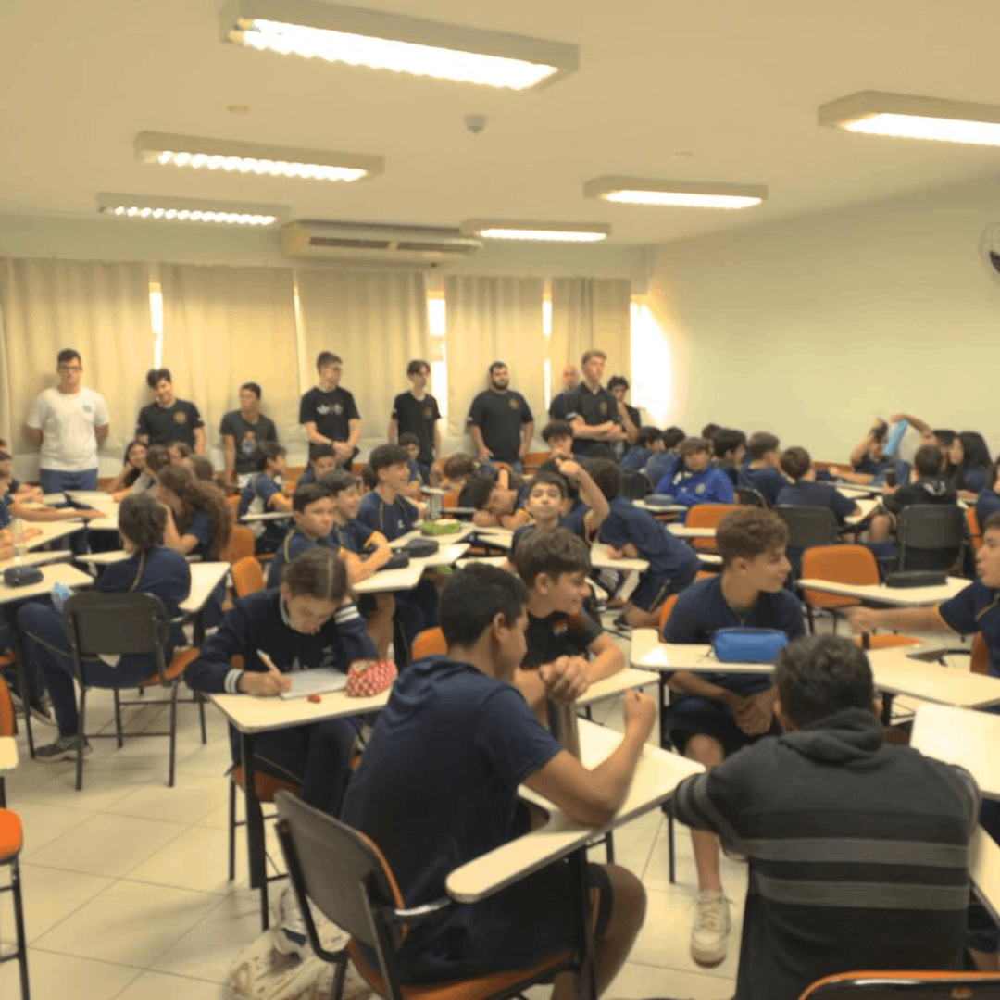
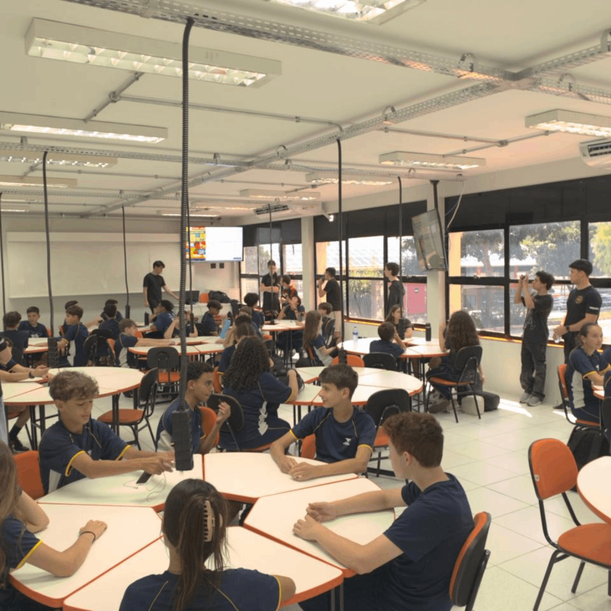
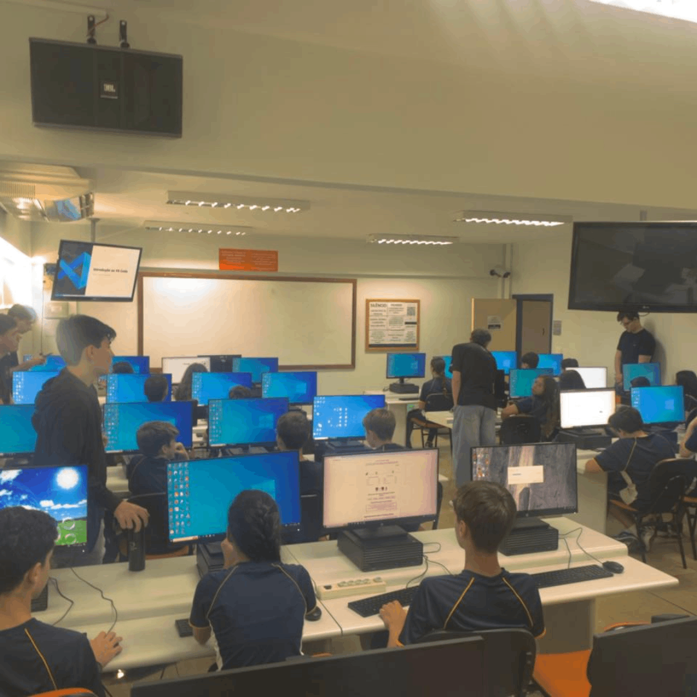

Avaliação Diagnóstica
Dia inicial. O intuito da prova era segregar a turma entre conhecimento básico e intermediário.
Prazer! Meu nome é Rafael Schnorr, tenho 17 anos e terminei o ensino médio em 2025. Atualmente, estou fazendo Ciência da Computação na UniFil. Nasci e cresci na cidade de Londrina (PR), conhecida pelas universidades, pelos 1001 influencers que aqui nasceram e pelo suco da rodoviária.
Desde pequeno, sempre gostei de matemática. Por muito tempo, procurei algo que relacionasse ela à arte. Já me cacei na arquitetura, no design gráfico e até na música. Mas nenhuma dessas artes traz o "fator útil" que a computação oferece.

Dia inicial. O intuito da prova era segregar a turma entre conhecimento básico e intermediário.
O tutor Kawan aplicou exercícios competitivos em grupo sobre preposições conjuntivas e disjuntivas.

Avanço no assunto lógica, trazendo exercícios mais complexos no formato de competição em grupos.

Início ao WebDev, entendendo a diferença entre Web e Internet com aula expositiva.
Auxílio com a interface do VSCode, IDE que utilizaremos durante o resto do ano.

Início da linguagem JavaScript aplicada na Web. Logs no console e alertas.